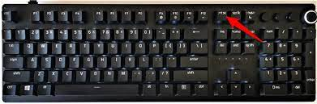

Travel the world
Aims of the class
- Practice taking screenshots
- Learn how to use google street view and google maps
- Practice Microsoft Power Point
How to take screenshots?
Method 1
Use CTRL + SHIFT + S in firefox
Method 2
h5
Find this key on the keyboard:

Open Paint and paste:
Your screenshots should be there.
If you need part of screenshoot use select tool in paint.
Task
Using Google Maps and Streetview take screenshots of following location.- Federal Parliament of Nepal, Kathmandu
- UN Headquarter, Geneva
- Imperial Palac, Tokyo
- Eiffel Tower, Paris
- White House, Washington
- Times Square, New York
- Urząd Miasta, Szczecin, Poland
- Sejm, Warsaw, Poland
- Other place you like